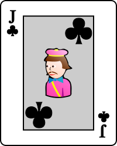
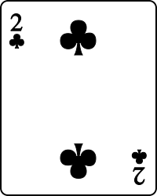
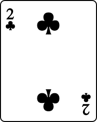

擁有最高點數的玩家獲勝，其點數必須低於或等于21點，超過21點的玩家則稱為爆牌（Bust）。
Ace可记为1点或11點，J、Q、K 每張為10點，而2~10則按牌面點數算，若玩家會因A而爆牌則A可算為1點。
玩家會以閒家（Player）的身份盡可能取得最接近21點數的牌來擊敗莊家（Dealer），同時也要避免爆牌。需要注意若玩家爆牌在先即為輸。
若玩家和莊家擁有同樣點數，這樣的狀態稱為「Tie」，玩家和莊家皆不算輸贏。
遊戲開始時莊家只會展示一張牌讓玩家進行判斷是否繼續要牌。點擊「Hit」表示要一張牌，點擊「Stand」表示停牌轉由進行莊家的回合。

若玩家和莊家都不爆牌且並非平手的狀態下則點數較大的一方取得勝利。


若玩家或莊家手中的牌是由一張Ace和一張10點的牌（K、Q、J、10）組成，這種情況這副手牌則稱為「Blackjack」，直接亮出即可直接獲得勝利（除非雙方都獲得Blackjack，這種情況下則平手）。


 


若玩家或莊家要牌直至手上有5張牌而又沒有爆牌，這副手牌稱為「五龍(Fivecards)」,五龍出現的情況將無視對手的回合及點數直接判勝。